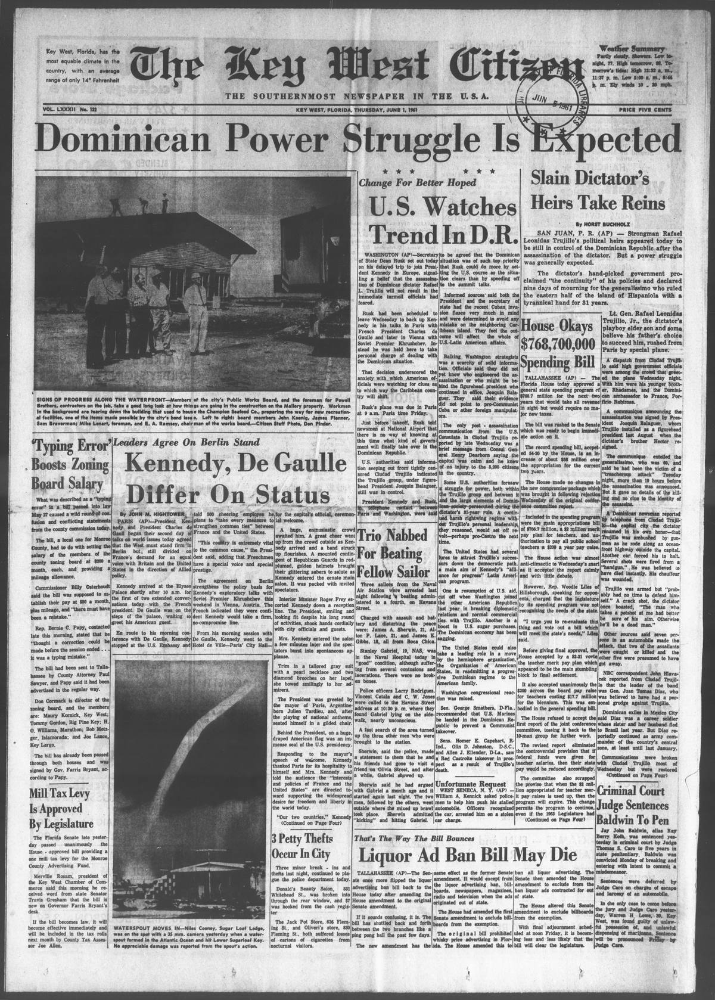

Change For Better HopedSe espera un cambio para bien
The Key West Citizen. Key West, Fla., June 1, 1961. Page 1. Published by Citizen Pub. Co. A daily newspaper.The Key West Citizen. Key West, Fla., 1 de junio de 1961. Página 1. Publicado por Citizen Pub. Co. Periódico diario. View the originalVer el original

The Key West Citizen reported that Washington considered financial aid, increased sugar purchases, and OAS reintegration to guide the Dominican Republic toward democracy following Rafael Trujillo's assassination. In Congress, Senator George Smathers proposed deploying U.S. Marines to prevent a Communist takeover, while other lawmakers warned of potential Castroite influence.The Key West Citizen informó que Washington evaluaba brindar asistencia financiera, aumentar las compras de azúcar y propiciar la reintegración a la OEA para orientar a la República Dominicana hacia la democracia tras el asesinato de Rafael Trujillo. En el Congreso, el senador George Smathers propuso el despliegue de infantes de marina estadounidenses para evitar una toma del poder por parte de los comunistas, mientras otros legisladores advertían sobre la posible influencia castrista.
FULL TEXT:TEXTO COMPLETO:
The Key West Citizen June 1, 19611 de junio de 1961
Change For Better HopedCambio para mejor esperado
U.S. Watches Trend In D.R.EE. UU. observa la tendencia en la R. D.
WASHINGTON (AP)—Secretary of State Dean Rusk set out today on his delayed trip to join President Kennedy in Europe, signalling a belief that the assassination of Dominican dictator Rafael L. Trujillo will not result in the immediate turmoil officials had feared.WASHINGTON (AP)—El Secretario de Estado Dean Rusk partió hoy en su viaje demorado para unirse al presidente Kennedy en Europa, señalando una creencia de que el asesinato del dictador dominicano Rafael L. Trujillo no resultará en el tumulto inmediato que los oficiales habían temido.
Rusk had been scheduled to leave Wednesday to back up Kennedy in his talks in Paris with French President Charles de Gaulle and later in Vienna with Soviet Premier Khrushchev. Instead he was held here to take personal charge of dealing with the Dominican situation.Rusk había sido programado para salir el miércoles para respaldar a Kennedy en sus conversaciones en París con el presidente francés Charles de Gaulle y más tarde en Viena con el Primer Ministro soviético Khrushchev. En su lugar fue retenido aquí para tomar cargo personal de tratar con la situación dominicana.
That decision underscored the anxiety with which American officials were watching for clues as to which way the Caribbean country will shift.Esa decisión subrayó la ansiedad con la que los oficiales estadounidenses observaban claves sobre hacia qué lado se inclinará el país caribeño.
Rusk’s plane was due in Paris at 9 a.m. Paris time Friday.El avión de Rusk debía llegar a París a las 9 a. m. hora de París el viernes.
Just before takeoff, Rusk told newsmen at National Airport that there is no way of knowing at this time what kind of government will finally take over in the Dominican Republic.Justo antes del despegue, Rusk dijo a los periodistas en el Aeropuerto Nacional que no hay manera de saber en este momento qué clase de gobierno finalmente tomará el poder en la República Dominicana.
U.S. authorities said information seeping out from tightly censored Ciudad Trujillo indicated the Trujillo group, under figurehead President Jouquin Balaguer, still was in control.Autoridades de EE. UU. dijeron que información filtrándose desde Ciudad Trujillo fuertemente censurada indicaba que el grupo de Trujillo, bajo el presidente títere Jouquin Balaguer, todavía estaba en control.
President Kennedy and Rusk, in telephone contact between Paris and Washington, were said to be agreed that the Dominican situation was of such top priority that Rusk could do more by setting the U.S. course as the situation clears than by speeding off to the summit talks.El presidente Kennedy y Rusk, en contacto telefónico entre París y Washington, se decía estaban de acuerdo en que la situación dominicana era de tal alta prioridad que Rusk podría hacer más estableciendo el curso de EE. UU. a medida que la situación se aclara que apresurándose a las conversaciones cumbre.
Informed sources said both the President and the secretary of state had the recent Cuban invasion fiasco very much in mind and were determined to avoid any mistake on the neighboring Caribbean island. They feel the outcome will affect the whole of U.S.-Latin American affairs.Fuentes informadas dijeron que tanto el Presidente como el secretario de estado tenían el reciente fiasco de la invasión cubana muy presente en la mente y estaban determinados a evitar cualquier error en la vecina isla caribeña. Sienten que el resultado afectará la totalidad de los asuntos EE. UU.-latinoamericanos.
Balking Washington strategists was a scarcity of solid information. Officials said they did not yet know who engineered the assassination or who might be behind the figurehead president who continued in office, Joaquin Balaguer. They said their evidence did not point to pro-Communist Cuba or other foreign manipulators.Estorbando a los estrategas de Washington estaba una escasez de información sólida. Los oficiales dijeron que aún no sabían quién ingenió el asesinato o quién podría estar detrás del presidente títere que continuó en el cargo, Joaquin Balaguer. Dijeron que su evidencia no apuntaba a la Cuba pro-Comunista u otros manipuladores extranjeros.
The only post-assassination communication from the U.S. Consulate in Ciudad Trujillo reported by late Wednesday was a brief message from Consul General Henry Dearborn saying the capital was calm and he knew of no injury to the 5,200 citizens in the country.La única comunicación post-asesinato desde el Consulado de EE. UU. en Ciudad Trujillo reportada hasta el miércoles avanzado fue un breve mensaje del Cónsul General Henry Dearborn diciendo que la capital estaba calmada y que no sabía de ninguna lesión a los 5,200 ciudadanos en el país.
Some U.S. authorities foresaw a struggle for power, both within the Trujillo group and between it and the large elements of Dominican society persecuted during the dictator’s 31-year rule. A continued harsh rightwing regime without Trujillo’s personal leadership, they reasoned, would set off revolt—perhaps pro-Castro the next time.Algunas autoridades de EE. UU. previeron una lucha por el poder, tanto dentro del grupo de Trujillo como entre él y los grandes elementos de la sociedad dominicana perseguidos durante el gobierno de 31 años del dictador. Un régimen derechista duro continuado sin el liderazgo personal de Trujillo, razonaron, desencadenaría una revuelta—quizás pro-Castro la próxima vez.
The United States had several lures to attract Trujillo’s successors down the democratic path, a main aim of Kennedy’s “alliance for progress” Latin American program.Los Estados Unidos tenían varios atractivos para atraer a los sucesores de Trujillo por el camino democrático, un objetivo principal del programa latinoamericano de «alianza para el progreso» de Kennedy.
One is resumption of U.S. aid, cut off when Washington joined the other American Republics last year in breaking diplomatic relations and normal commercial ties with Trujillo. Another is a boost in U.S. sugar purchases. The Dominican economy has been sagging.Uno es la reanudación de la ayuda de EE. UU., cortada cuando Washington se unió a las otras Repúblicas Americanas el año pasado en romper relaciones diplomáticas y lazos comerciales normales con Trujillo. Otro es un aumento en las compras de azúcar de EE. UU. La economía dominicana ha estado decayendo.
The United States could also take a leading role in a move by the hemisphere organization, the Organization of American States, in readmitting a progressive Dominican regime to the American family.Los Estados Unidos también podrían tomar un papel principal en una movida de la organización hemisférica, la Organización de Estados Americanos, en readmitir un régimen dominicano progresivo a la familia americana.
Washington congressional reaction was mixed.La reacción del Congreso de Washington fue mixta.
Sen. George Smathers, D-Fla., recommended that U.S. Marines be landed in the Dominican Republic to prevent a Communist takeover.El Senador George Smathers, D-Fla., recomendó que se desembarcaran Infantes de Marina de EE. UU. en la República Dominicana para prevenir una toma de poder Comunista.
Sens. Homer E. Capehart, R-Ind., Olin D. Johnston, D-S.C., and Allen J. Ellender, D-La., saw a Red Castroite takeover in prospect as a result of Trujillo’s death.Los Senadores Homer E. Capehart, R-Ind., Olin D. Johnston, D-S.C., y Allen J. Ellender, D-La., vieron una toma de poder Roja Castrista en perspectiva como resultado de la muerte de Trujillo.